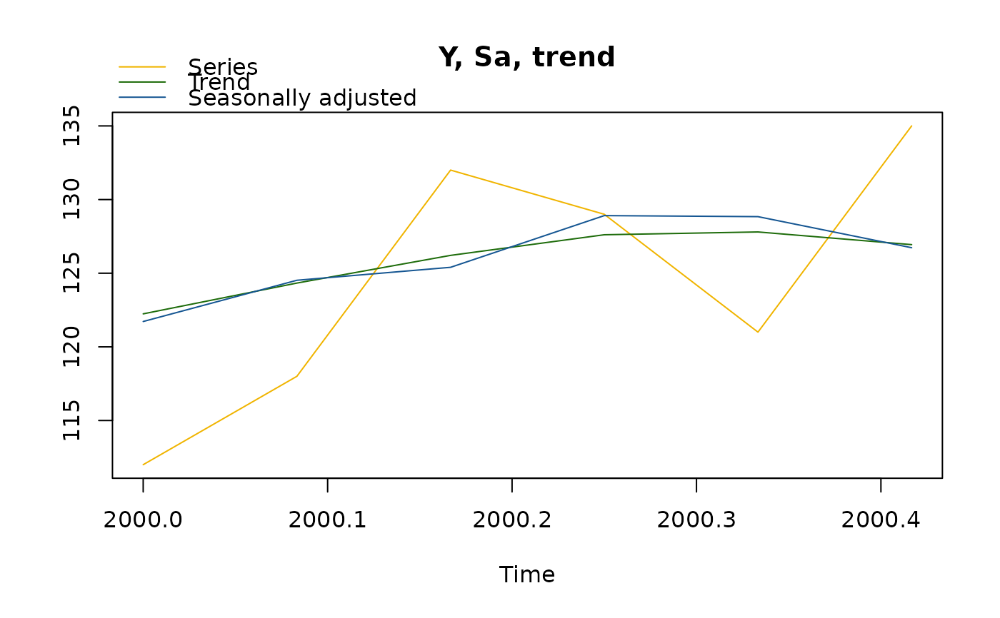

Generic Function for Seasonal Adjustment Decomposition
Source:R/decomposition.R, R/generics.R
sa_decomposition.RdGeneric function to format the seasonal adjustment decomposition components.
sa_decomposition() is a generic function defined in other packages.
Usage
sadecomposition(y, sa, t, s, i, mul)
# S3 method for class 'JD3_SADECOMPOSITION'
print(x, n_last_obs = frequency(x$series), ...)
# S3 method for class 'JD3_SADECOMPOSITION'
plot(
x,
first_date = NULL,
last_date = NULL,
type_chart = c("sa-trend", "seas-irr"),
caption = c(`sa-trend` = "Y, Sa, trend", `seas-irr` = "Sea., irr.")[type_chart],
colors = c(y = "#F0B400", t = "#1E6C0B", sa = "#155692", s = "#1E6C0B", i = "#155692"),
...
)
sa_decomposition(x, ...)Arguments
- y, sa, t, s, i, mul
seasonal adjustment decomposition parameters.
- x
the object to print.
- n_last_obs
number of observations to print (by default equal to the frequency of the series).
- ...
further arguments.
- first_date, last_date
first and last date to plot (by default all the data is used).
- type_chart
the chart to plot:
"sa-trend"(by default) plots the input time series, the seasonally adjusted and the trend;"seas-irr"plots the seasonal and the irregular components.- caption
the caption of the plot.
- colors
the colours used in the plot.
Examples
decompo <- sadecomposition(
y = ts(c(112, 118, 132, 129, 121, 135), start = 2000, frequency = 12L),
sa = ts(c(121.72, 124.52, 125.4, 128.91, 128.84, 126.73), start = 2000, frequency = 12L),
t = ts(c(122.24, 124.33, 126.21, 127.61, 127.8, 126.94), start = 2000, frequency = 12L),
s = ts(c(0.92, 0.95, 1.05, 1, 0.94, 1.07), start = 2000, frequency = 12L),
i = ts(c(1, 1, 0.99, 1.01, 1.01, 1), start = 2000, frequency = 12L),
mul = TRUE
)
print(decompo)
#> Last values
#> series sa trend seas irr
#> Jan 2000 112 121.72 122.24 0.92 1.00
#> Feb 2000 118 124.52 124.33 0.95 1.00
#> Mar 2000 132 125.40 126.21 1.05 0.99
#> Apr 2000 129 128.91 127.61 1.00 1.01
#> May 2000 121 128.84 127.80 0.94 1.01
#> Jun 2000 135 126.73 126.94 1.07 1.00
plot(decompo)
